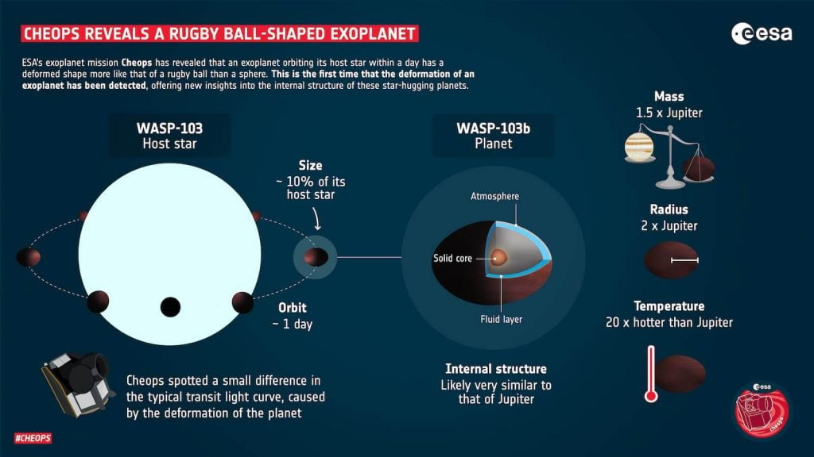
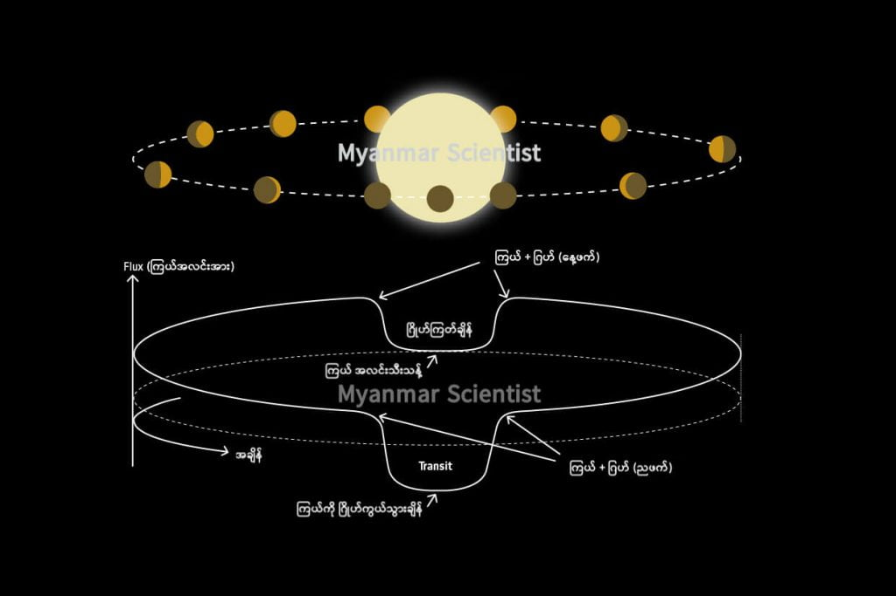

ဒီ ဂြိုဟ်တွေဟာ သူတို့ရဲ့ မိခင် ကြယ်ကို ပတ်နေရာမှာ အရမ်းကို နီးကပ်လွန်းစွာ ပတ်နေကြတဲ့ ဂြိုဟ်တွေ ဖြစ်ပါတယ်။ နက္ခတ် ပညာရှင် တွေက ဒီ ဂြိုဟ်တွေဟာ အလွန် အင်မတန် ပူပြင်းရုံ မကဘူး မိခင်ဂြိုဟ်ရဲ့ ပြင်းထန်တဲ့ ဆွဲငင်အားကြောင့် ပုံပျက်ပန်းပျက်လဲ ဖြစ်နေမယ်လို့ ယူဆခဲ့ ကြပါတယ်။ ဒီ အယူအဆကို သက်သေပြနိုင် ခြင်းတော့ မရှိခဲ့ ပါဘူး။
ဒါပေမယ့် ယခုအခါ သိပ္ပံ ပညာရှင် တွေဟာ ပုံပျက်နေတဲ့ ကြာသပတေး ဂြိုဟ်ပူကြီး တစ်စင်းကို ပထမဆုံး အကြိမ်အဖြစ် ရှာဖွေ တွေ့ရှိခဲ့ ကြပါတယ်။
ဒီဂြိုဟ်ဟာ ပုံမှန် ဂြိုဟ်တွေလို လုံးဝန်းတဲ့ ပုံသဏ္ဍာန် မရှိပဲ ခပ် ရှည်မြောမြောနဲ့ နှစ်ဖက် ချွန် နေတဲ့ လက်ပစ်ဘောလုံး ပုံသဏ္ဍာန် ဖြစ်နေပါတယ်။ ဒီဂြိုဟ်ရဲ့ ပုံဟာ အောက်က ပုံထဲကလို ရပ်ဘီ (Rugby Ball) လက်ပစ်ဘောနဲ့ ခပ်ဆင်ဆင် တူတယ်လို့ ပြောကြပါတယ်။
အခုလို တွေ့ရှိမှုနဲ့ ပါတ်သက်ပြီး ပြင်သစ်နိုင်ငံ ပါရီမြို့မှာ ရှိတဲ့ ပါရီနက္ခတ်မျှော်စင် က နက္ခတ် ပညာရှင် ဂျက် လက်စ်ကာ (Jacques Laskar) က “ဒီ CHEOPS နက္ခတ် မှန်ပြောင်း ကြီးကနေ ဒီလောက် သေးတဲ့ ပုံပျက်တာလေးကို ရှာတွေ့ခဲ့တယ် ဆိုတာ မယုံနိုင် စရာ ပါပဲ” လို့ မှတ်ချက် ပြုပါတယ်။
သူက ဆက်ရှင်းပြ ရာမှာ “ဒါဟာ ဒီလိုမျိုး ရှာဖွေမှုကို ပထမဆုံး အကြိမ် ပြုလုပ်ခဲ့ခြင်းပဲ ဖြစ်ပါတယ်။ ဒီ့ထက် ပိုပြီး ကြာကြာ စောင့်ကြည့် ခြင်းအားဖြင့် ကျွန်တော်တို့ရဲ့ တွေ့ရှိချက်ကို ပိုမို ခိုင်မာ စေနိုင်မယ်လို့ ယုံကြည်ပါတယ်။ နောက်ပြီး အခုဂြိုဟ်ရဲ့ အတွင်းပိုင်း ဖွဲ့စည်းတည်ဆောက်မှုနဲ့ ပါတ်သက်လို့လဲ ပိုပြီး နားလည်လာ လိမ့်မယ်လို့ မျှော်လင့်ရပါတယ်” လို့ ဆက်ပြောပါတယ်။
အခုတွေ့တဲ့ ဂြိုဟ်ကြီးကို WASP-103b လို့ အမည်ပေးထား ပါတယ်။ ဒီဂြိုဟ်ဟာ WASP-103 အမည်ရှိတဲ့ ကြယ်ကို လှည့်ပါတ်နေတာ ဖြစ်ပါတယ်။ (ဂြိုဟ်တွေကို အမည်ပေးတဲ့ စည်းမျဉ်းအရ ပထမဆုံး တွေ့တဲ့ ဂြိုဟ်ကို မိခင် ကြယ်ရဲ့ အမည်နောက်က b တပ်ပြီး ခေါ်ဝေါ်လေ့ ရှိကြပါတယ်။)
အခုဂြိုဟ်ဟာ ကမ္ဘာက နေဆို အလင်းနှစ် ၁,၈၀၀ လောက် ကွာပါတယ်။ ကြာသပတေး ဂြိုဟ်ပူကြီး ဆိုတဲ့ နာမည် အတိုင်းပဲ ဒီဂြိုဟ်ဟာ ဓါတ်ငွေ့တွေနဲ့ ဖွဲ့စည်းထားတဲ့ ဓါတ်ငွေ့လုံးကြီး ဖြစ်ပါတယ်။ (ကြာသပတေး ဂြိုဟ်ကလဲ ဓါတ်ငွေ့လုံး ကြီးပဲ ဖြစ်ပါတယ်။)
ဒါပေမယ့် ဂျူပီတာ (ကြာသပတေး ဂြိုဟ်) နဲ့ မတူတာ ကတော့ ဒီ အမျိုးအစား ဂြိုဟ်တွေဟာ သူတို့ရဲ့ မိခင် ကြယ်ကို အရမ်းကို နီးကပ်စွာ ပတ်နေတာပဲ ဖြစ်ပါတယ်။ ဘယ်လောက်တောင် နီးလဲဆို ဒီဂြိုဟ်တွေ နေကို တစ်ပတ် ပတ်မိဖို့ အချိန် ၁၀ ရက်တောင် မကြာဘူးလို့ ဆိုပါတယ်။ ဒီလို အရမ်း နီးလို့လဲ ဒီဂြိုဟ်တွေရဲ့ အပူချိန်က အရမ်းကို ပူပြင်းတာ ဖြစ်ပါတယ်။ (ဒါ့ကြောင့်လဲ ကြာသပတေး ဂြိုဟ်ပူကြီးတွေ လို့ အမည်ပေး ထားတာ ဖြစ်ပါတယ်။)

ဒါပေမယ့် လက်တွေ့မှာတော့ ဒီလို ကြာသပတေး ဂြိုဟ်ပူတွေ အများအပြား ရှိပါတယ်။ အခုထိ ရှာတွေ့ပြီး သမျှ ပြင်ပဂြိုဟ် (exoplanet = နေအဖွဲ့အစည်း အပြင်ဖက်က ဂြိုဟ်တွေကို ခေါ်သော အမည်) ပေါင်း ၅,၀၀၀ ကျော်မှာ အနည်းဆုံး အလုံး ၃၀၀ လောက်ဟာ အခုဂြိုဟ်လို ဓါတ်ငွေ့တွေနဲ့ ဖွဲ့စည်းထားတဲ့ ဓါတ်ငွေ့လုံး ကြီးတွေ ဖြစ်မယ်လို့ ယူဆ ကြပါတယ်။
သိပ္ပံ ပညာရှင် တွေက ဒီ ဂြိုဟ်ကြီးတွေဟာ မူလက မိခင်ကြယ်နဲ့ နဲနဲ လှမ်းတဲ့ ပတ်လမ်းမှာ ဂြိုဟ်အဖြစ် မွေးဖွားလာခဲ့ ကြတယ်လို့ ယူဆကြပါတယ်။ ဂြိုဟ် အဖြစ် မွေးဖွားလာ ပြီးမှ အကြောင်းကြောင်းကြောင့် မိခင်ကြယ်နဲ့ အရမ်း နီးကပ်တဲ့ ပတ်လမ်းကို ရွှေ့ပြောင်း ရောက်ရှိ လာကြတယ်လို့ ယူဆ ကြပါတယ်။
ဒီ အမျိုးအစား ဂြိုဟ်တွေကို နက္ခတ် ပညာရှင် တွေက စိတ်ဝင် စားကြပါတယ်။ မိခင် ကြယ်နဲ့ အရမ်း နီးကပ်စွာ ပတ်နေတာမို့ မိခင်ကြယ်နဲ့ ဂြိုဟ်နဲ့ ကြားမှာ ဖြစ်ပေါ်တဲ့ ဆွဲငင်အား အပြန်အလှန် သက်ရောက်မှုတွေနဲ့ ဒီဆွဲအား (tidal force) သက်ရောက်မှု တွေကို အသေးစိတ် လေ့လာ နိုင်လို့ပဲ ဖြစ်ပါတယ်။
အခု WASP-103b ဂြိုဟ်ကို ၂၀၁၅ ခုနှစ် ကတဲက ရှာဖွေ တွေ့ရှိခဲ့တာပါ။ သူ့ရဲ့ ဒြပ်ထုက ဂျူပီတာ ဂြိုဟ်ရဲ့ ဒြပ်ထုရဲ့ တစ်ဆခွဲ လောက် ရှိပါတယ်။ အရွယ်အစား အားဖြင့်တော့ ဂျူပီတာ ရဲ့ အချင်း နှစ်ဆလောက် ရှိပါတယ်။ နောက်ပြီး သူက မိခင်ကြယ်ကို တစ်ပတ်ပါတ်ဖို့ အချိန် တစ်ရက်ပဲ ကြာပါတယ်။ ပြီးတော့ ဒီကြယ်ရဲ့ အပူချိန်က ဂျူပီတာ ဂြိုဟ်ထက် အဆ ၂၀ လောက် ပိုပူပါတယ်။
ဒီကြယ်က ဂျူပီတာထက် အချင်း နှစ်ဆလောက် ပိုကြီးပေမယ့် ဒီကြယ်ကို တယ်လီစကုပ် ကနေ ကြည့်ပြီး တိုက်ရိုက် ကြည့်လို့တော့ မရပါဘူး။ ဘာကြောင့်လဲ ဆိုတော့ သူ့ရဲ့ မိခင်ကြယ်က အရမ်း လင်းလွန်းတော့ ကြယ်ရဲ့ အလင်းရောင်က ဖုံးသွားတဲ့ အတွက် ဒီဂြိုဟ်ကို တယ်လီစကုပ်နဲ့ ကြည့်ရင် မမြင်ရပါဘူး။
ဒါဆို ဒီဂြိုဟ်ရှိမှန်း ဘယ်လို သိသလဲ။ ဒီဂြိုဟ်နဲ့ သက်ဆိုင်တဲ့ အချက်အလက် တွေကို ဘယ်လို တိုင်းမလဲ။
နေအဖွဲ့အစည်း အပြင်ဖက်က ဂြိုဟ်တွေကို ရှာဖွေ တိုင်းတာတဲ့ အခါမှာ Transit လို့ ခေါ်တဲ့ အချိန်ကို တိုင်းလို့ ရပါတယ်။ ဒါက ဘာလဲ ဆိုတော့ မိခင်ကြယ်ရဲ့ အရှေ့ကနေ ဂြိုဟ် ဖြတ်သွားတဲ့ အချိန်မှာ ကြယ်က ထွက်လာတဲ့ အလင်းရောင်ရဲ့ တစိတ် တဒေသကို ဂြိုဟ်က ကွယ်လိုက်တာမို့ ကြယ်ရဲ့ အရောင်က အနည်းငယ် မှိန်သွားပါတယ်။
ဒီလိုပဲ ဂြိုဟ်က ကြယ်ရဲ့ နောက်ဖက်ခြမ်းကို ရောက်သွားတဲ့ အခါမှာလဲ ဂြိုဟ်က ပြန်လာတဲ့ အလင်း ကွယ်သွားတာမို့ တခါ ထပ်ပြီး မဆိုစလောက် ကလေး မှိန်သွား ပြန်ပါသေးတယ်။ ကြယ်ရဲ့ အလင်းကို ဂြိုဟ်က ကွယ်လိုက်လို့ မှိန်သွား သလောက်တော့ မမှိန်ဘူးပေါ့။

ဒီ တိုင်းထွာရရှိခဲ့တဲ့ အချက်တွေကို မူတည်ပြီး နက္ခတ် ပညာရှင် တွေဟာ ဒီ ဂြိုဟ်ရဲ့ ဒြပ်ထု ဘယ်လောက် ရှိတယ်၊ ဒီ ဒြပ်ထုက ဂြိုဟ်အတွင်း ပိုင်းမှာ ဘယ်လို ပုံစံ ပျံ့နှံ့နေလဲ ဆိုတာတွေကို တွက်ချက် နိုင်ခဲ့ပါတယ်။ ဒါ့အပြင် ဒီဂြိုဟ်နဲ့ ဆိုင်တဲ့ အခြား အချက်အလက် တွေကိုလဲ တွက်ချက် ရယူ နိုင်ခဲ့ပါတယ်။
ဒီ အချက် အလက် တွေကနေ နောက်တဆင့် အနေနဲ့ ဒီဂြိုဟ်ကြီးကို ဘယ်လို ဒြပ်ပစ္စည်း တွေနဲ့ တည်ဆောက် ဖွဲ့စည်း ထားလဲ ဆိုတာကို ဆက်လက် တွက်ချက် နိုင်ခဲ့ပါတယ်။ ဂြိုဟ်တစ်စင်းကို ဖွဲ့စည်းထားတဲ့ ဒြပ်ပစ္စည်းပေါ် မူတည်ပြီး ဒီဂြိုဟ်ရဲ့ ပုံသဏ္ဍာန် ဟာ ပြင်းထန်တဲ့ ဆွဲငင်အားရဲ့ လွှမ်းမိုးမှု အောက်မှာ ဘယ်လောက် ပုံပျက် သွားနိုင်မလဲ ဆိုတာကို မှန်းဆကြည့်လို့ ရပါတယ်။
ဥပမာ အနေနဲ့ ပြောရရင် ကမ္ဘာကို ဆွဲတဲ့ လရဲ့ ဆွဲငင်အားကြောင့် သမုဒ္ဒရာ ထဲက ရေတွေဟာ လရှိတဲ့ ဖက်ကို လာစုပြီး ဒီရေ ဖြစ်ပေါ် လာပါတယ်။ ဒါပေမယ့် ကမ္ဘာ့ ကုန်းမြေတွေကတော့ မာကျောတဲ့ ကျောက်ဆိုင် ကျောက်သား တွေမို့ လရဲ့ ဆွဲငင်အားကြောင့် သိသိသာသာ ကြွတက် လာခြင်း မရှိပါဘူး။
ဒီလိုပဲ ဂြိုဟ်တစ်ခုဟာ ပြင်းထန်တဲ့ ဆွဲငင်အားကြောင့် ဘယ်လောက် ပုံပျက်သွား မလဲဆိုတာ ဂြိုဟ်တစ်ခုကို ဖွဲ့စည်းထားတဲ့ အရာဝတ္ထုတွေဟာ အစိုင်အခဲလား၊ အရည်လား၊ အငွေ့လား ဆိုတဲ့အပေါ် အများကြီး မူတည်နေပါတယ်။
နက္ခတ် ပညာရှင် တွေရံ သုတေသန အရ WASP-103b ဂြိုဟ်ဟာ ဂျူပီတာလို အရွယ် ကြီးမားတာတင် မကပါဘူး၊ အတွင်းပိုင်း ဖွဲ့စည်းပုံ ကလဲ ဂျူပီတာနဲ့ အတော်လေး တူတယ်လို့ ဆိုပါတယ်။ ဒါပေမယ့် မိခင်ကြယ်ရဲ့ ပြင်းထန်တဲ့ အပူချိန်ကြောင့်မို့ သူ့ရဲ့ အတွင်းပိုင်းက သိပ်သည်းမှုကတော့ ဂျူပီတာထက် လျော့နည်းပါတယ်။ (ဂျူပီတာလောက် ကျစ်ကျစ်လစ်လစ် မရှိပဲ အနည်းငယ် ပွယောင်းယောင်း ဖြစ်နေတာလို့ ဆိုလိုတာပါ။)
သိပ္ပံ ပညာရှင် တွေကတော့ ဒီဂြိုဟ်ဘာ့ကြောင့် ဒီလို ပွယောင်းယောင်း ဖြစ်နေရတာလဲ ဆိုတာကို အသေအချာ သိဖို့ လေ့လာမှုတွေ ထပ်ပြီး ပြုလုပ်ရအုံးမယ် လို့ ဆိုပါတယ်။နောက်ပြီး ဒီဂြိုဟ် ဘယ်လို မွေးဖွားလာလဲ ဆိုတာလဲ သိရအောင် သူ့ရဲ့ အလယ်ဗဟို အူတိုင်ကိုလဲ အသေအချာ လေ့လာဖို့ လိုတယ်လို့ ဆိုပါတယ်။
ဒီဂြိုဟ်နဲ့ ပါတ်သက်လို့ နောက်ထပ် ထူးဆန်းတာ တခုလဲ ရှိပါသေးတယ်။ ကြာသာပတေး ဂြိုဟ်ပူကြီး တွေ အများစုဟာ မိခင်ကြယ်ဆီကို တဖြည်းဖြည်း လှည့်ပတ်ရင်း ဝင်ရောက် သွားကြပါတယ်။ ဒီလို မိခင်ကြယ် ဆိုကို လှည့်ပတ်ရင်း ခရုပတ်ခွေလို လည်ပြီး ဆင်းသွားတဲ့ အချိန်မှာ သူ့ရဲ့ အရှိန်ကလဲ တဖြည်းဖြည်း မြန်လာပါတယ်။
ဒါပေမယ့် အခုကြယ် ကတော့ ပြောင်းပြန် ဖြစ်နေပါတယ်။ အခြား သူ့လို နေနဲ့ ကပ်နေတဲ့ ဂြိုဟ်တွေ သွားနှုန်း တဖြည်းဖြည်း မြန်လာတဲ့ အချိန်မှာ သူ့ရဲ့ သွားနှုန်းကတော့ တဖြည်းဖြည်း နှေးလာ နေပါတယ်။ ဘာကြောင့် ဒီလို ဖြစ်ရလဲဆိုတာကိုတော့ နက္ခတ် ပညာရှင်တွေ အဖြေရှာ မရကြ သေးပါဘူး။
ဖြစ်နိုင်တာ တစ်ခုကတော့ သူ့အနားမှာ ပတ်နေတဲ့ အခြား ဂြိုဟ်တစ်စင်း ရဲ့ ဆွဲငင်အား သက်ရောက်မှုကြောင့် အရှိန် နှေးလာတာလဲ ဖြစ်နိုင်ပါတယ်။ ဒါမှ မဟုတ်လဲ မိခင်ကြယ်ကို ပတ်နေတဲ့ လမ်းကြောင်းက စက်ဝိုင်းပုံ နီးပါး မဖြစ်နေပဲ တစ်ဖက်ကို ရှည်မြောမြော ထွက်နေတာလဲ ဖြစ်နိုင်ပါတယ်။
နောက်ဖြစ်နိုင်တာ တခုကတော့ တိုင်းထွာရရှိ တဲ့ အချက်အလက် အချို့ မှားယွင်းတာလဲ ဖြစ်နိုင်တာပါပဲ။
ဒါမှ မဟုတ်လဲ နေအဖွဲ့အစည်း အပြင်က ဂြိုဟ်တွေနဲ့ ပါတ်သက်ပြီး ကျွန်တော်တို့ သေသေချာချာ နားမလည် နိုင်သေးတာလဲ ဖြစ်နိုင်ပါတယ်။
နက္ခတ် ပညာရှင် တွေကတော့ သိပ်မကြာမီက လွှတ်တင်လိုက်တဲ့ James Webb အာကာသ မှန်ပြောင်းကြီးကနေ ဒီဂြိုဟ်ကို လေ့လာပြီး မေးခွန်း အတော်များများအတွက် အဖြေကို ထုတ်ပေးနိုင် လိမ့်မယ်လို့ မျှော်လင့်လျှက် ရှိကြပါတယ်။
Reference: For The First Time, Astronomers Detect Rugby-Ball Shape of a Deformed Exoplanet | Science Alert